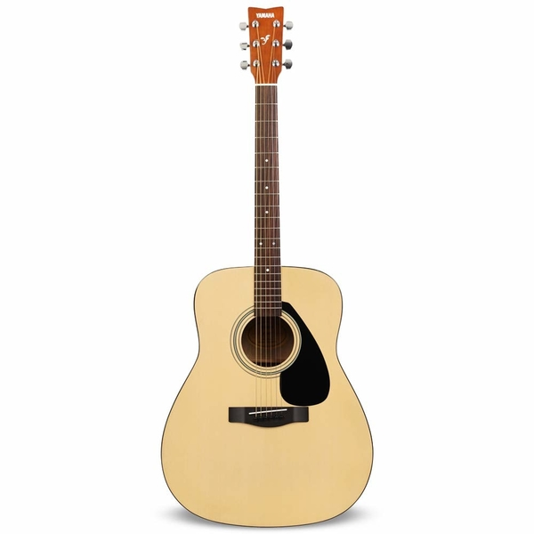
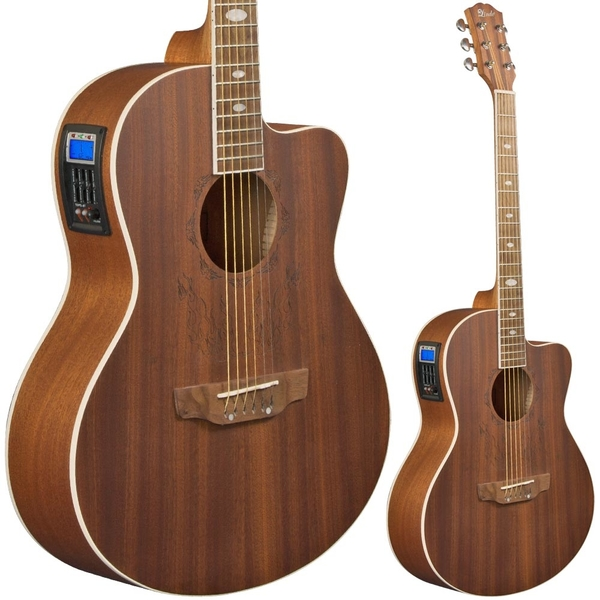

An acoustic guitar is a musical instrument in the guitar family, that projects the sounds of its vibrating strings acoustically through the air. Originally just called a guitar, the retronym 'acoustic guitar' came in use to distinguish it from an electric guitar, that relies on an electronic amplification system. The sound waves from the strings of an acoustic guitar resonate through the instrument's body, amplifying the sound. Typically, a guitar's body is a sound box, of which the top side serves as a sound board that enhances the vibration sounds of the strings. In standard tuning the guitar's six strings are tuned (low to high) E2 A2 D3 G3 B3 E4.

